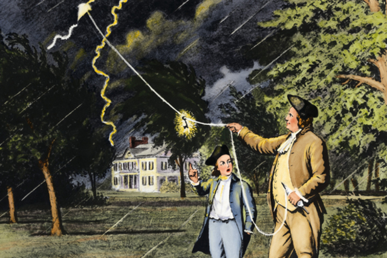
benjamin franklin invento el pararrayos con el fin de cuidar las propiedades que sufrian mucho por los rayos cuando caían los rayos en los tejados.
SEXTANTE JOHN CAMPBELL 1757
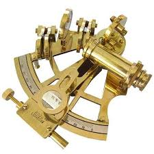
El capintán John Campbell lo construyó, aunque el primer instrumento preciso para medir la latitud ya habia sido ideador por el inglés John Hadley, en 1.731.
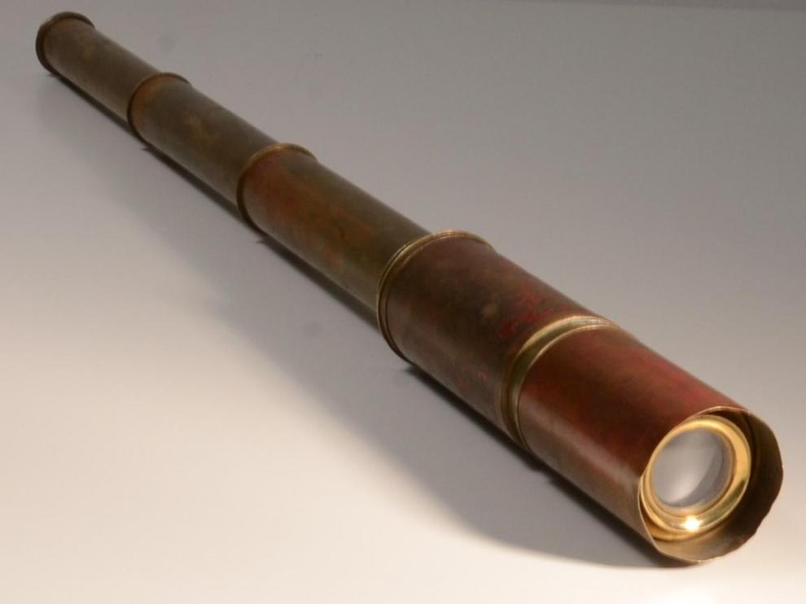
John Dollond inventó y patentó la lente acromática en 1758, año en que fue distinguido con la prestigiosa Medalla Copley de la Royal Society.
Años después, en 1765, su hijo Peter la mejoraba al inventar una lente acromática triple.
JAMES WATT, MÁQUINA DE VAPOR 1782
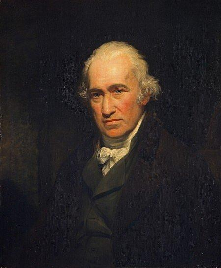
Interesado en las máquinas de vapor, inventadas por Thomas Savery y Thomas Newcomen, James Watt determinó las propiedades del vapor, en especial la relación de su densidad con la temperatura y la presión.
Construyó y patentó en 1769, a partir de una máquina atmosférica de Thomas Newcomen y Savery de 1712, el primer motor a vapor con cámara de condensación externa de uso práctico.
GLOBO DE AIRE CALIENTE, LOS HERMANOS FRANCES 1783

Joseph-Michel y Jacques-Étienne Montgolfier, los inventores del globo aerostático.
El 4 de junio de 1783 llevaron a cabo su primera demostración pública.
Joseph-Michel y Jacques-Étienne Montgolfier fueron dos hermanos franceses conocidos por ser considerados los inventores del globo aerostático.
TELAR MECÁNICO, EDMUND CARTWRIGHT 1785
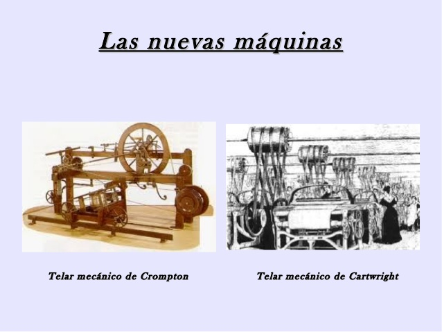
Edmund Cartwright (24 de abril, 30 de 1743 y octubre de 1823) fue un inventor Inglés y clérigo.
Patentó la primera potencia telar-una versión mejorada del telar manual en 1785 y estableció una fábrica en Doncaster, Inglaterra, para la fabricación de textiles.
LITOGRAFÍA, ALOYS SENEFELDER 1798
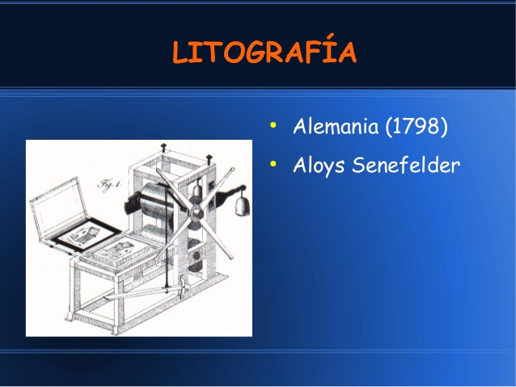
Johann Aloys Senefelder (Praga, 6 de noviembre de 1771 - Múnich, 26 de febrero de 1834), fue un inventor alemán, creador de la litografía en 1796.
TELAR JACQUARD, JOSEPH MARIE JACQUARD 1800
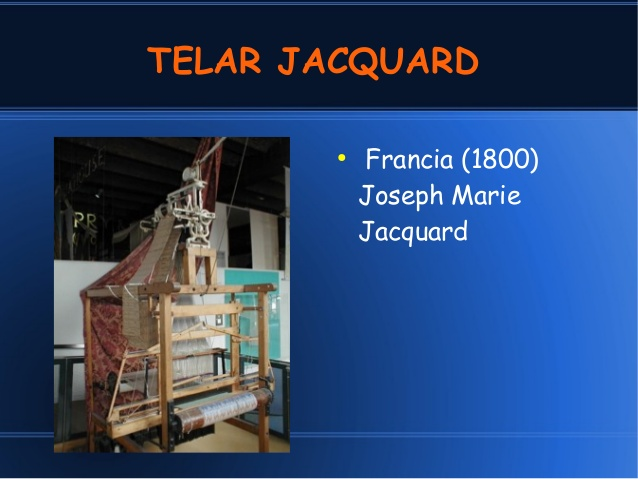
Joseph Marie Charles (Lyon, Francia, 7 de julio de 1752 - Oullins, Francia, 7 de agosto de 1834), conocido como Joseph Marie Jacquard, fue un tejedor y comerciante francés, conocido por crear el primer telar programable con tarjetas perforadas (también invención suya), el telar de Jacquard.
LOCOMOTORA DE VAPOR, RICHARD TREVITHICK 1803
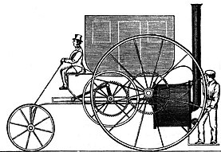
En 1803 Trevithick ideó y construyó una locomotora a vapor de alta presión, que fue instalada en País de Gales y también construyó otro vehículo automóvil, el "London Steam Carriage", que en principio era una diligencia de correos provista de una máquina de vapor, que llamó la atención del público y la prensa, pero que en la práctica era incómodo para los pasajeros y resultó más caro de mantener que un carruaje tirado por caballos, por lo que no logró imponerse.
ALIMENTOS ENLATADOS, PETER DURAND 1810
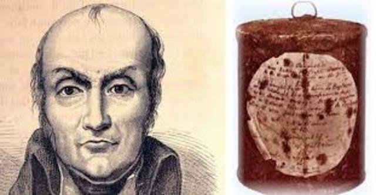
Tras el final de las Guerras Napoleónicas, el proceso de enlatado fue gradualmente puesto en práctica en otros países europeos y en los Estados Unidos. A partir del método de Appert, Peter Durand patentó en el Reino Unido en 1810 un proceso de envasado de alimentos en botes de hierro forjado sellados al vacío.
ESTETOSCOPIO, RENÉ LAENNEC 1816
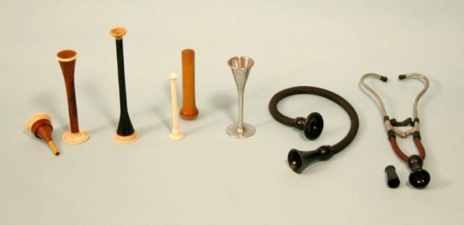
Resultados de búsqueda Fragmento destacado de la Web En 1816, el médico francés René Laennec inventó el primer estetoscopio usando un tubo de papel largo, enrollado para canalizar el sonido del pecho del paciente a la oreja.
MOTOR ELÉCTRICO, MICHAEL FARADAY 1821
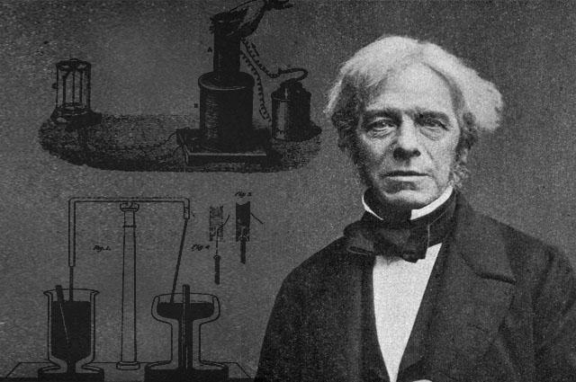
Aunque el químico danés Hans Christian Ørsted ya había descubierto por entonces el electromagnetismo, en 1821 Faraday construyó dos aparatos para producir lo que él denominó entonces rotación electromagnéticay, con este nombre como título, publicó los resultados de su trabajo; trabajo que, en realidad, describe el principio de lo que hoy conocemos como motor eléctrico.
NEGATIVO FOTOGRÁFICO, WILLIAM HENRY FOX TALBOT 1827
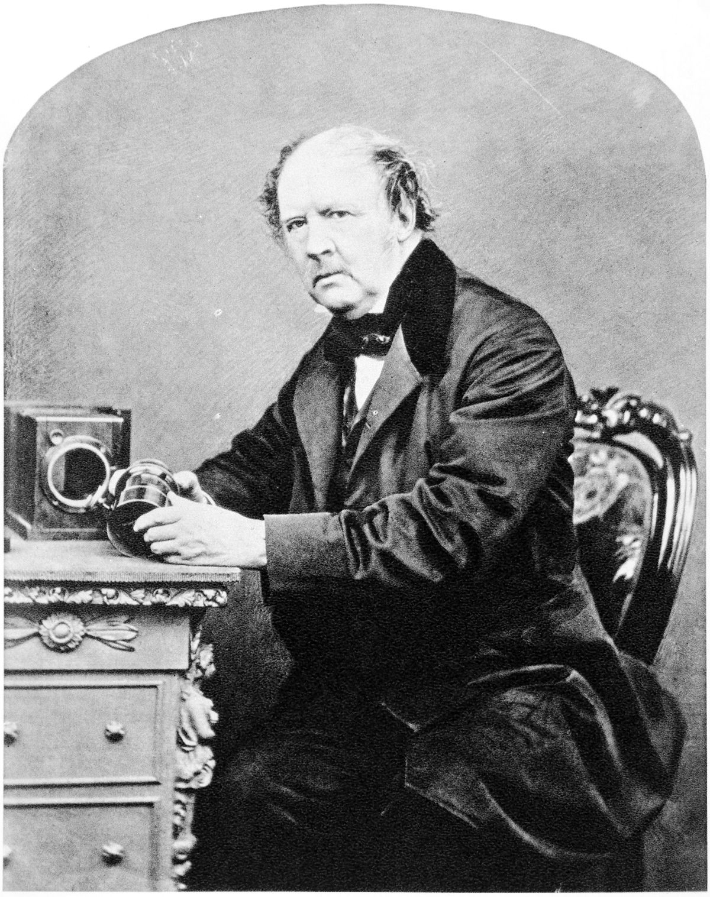
El primer procedimiento fotográfico negativo-positivo fue el calotipo, inventado por William Fox Talbot.
El término "negativo" fue introducido por primera vez por el científico John Herschel, amigo y colega de Talbot, a quien se debe el descubrimiento de las propiedades fijadoras del tiosulfato sódico.
DINAMO, MICHAEL FARADAY 1831
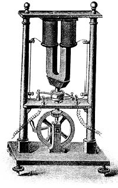
Durante los años 1830 y 1832, Michael Faraday descubrió que un conductor eléctrico moviéndose en un campo magnético generaba una diferencia de potencial.
El dinamo fue el primer generador eléctrico apto para un uso industrial, pues fue el primero basado en los principios de Michael Faraday.
CÓDIGO MORSE, SAMUEL MORSE 1844
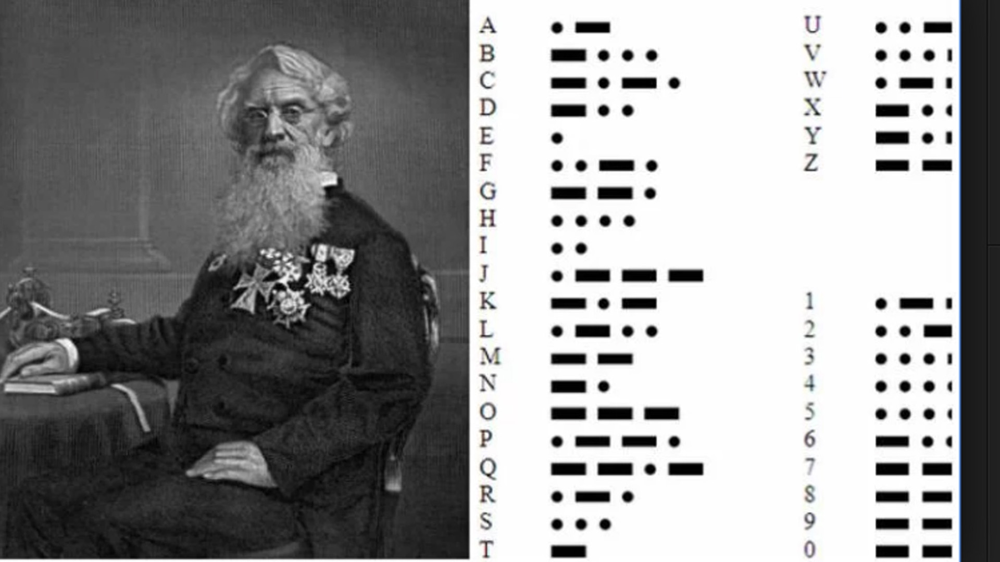
Samuel Finley Breese Morse (Boston, 27 de abril de 1791-Nueva York, 2 de abril de 1872) fue un inventor y pintor estadounidense que, junto con su asociado Alfred Vail, inventó e instaló un sistema de telegrafía en Estados Unidos, el primero de su clase.
ALGODÓN MERCERIZADO, JOHN MERCER 1850
Este proceso fue desarrollado en 1844 por John Mercer, científico textil nacido en Great Harwood, Lancashire, Inglaterra, al tratar fibras de algodón con hidróxido de sodio.